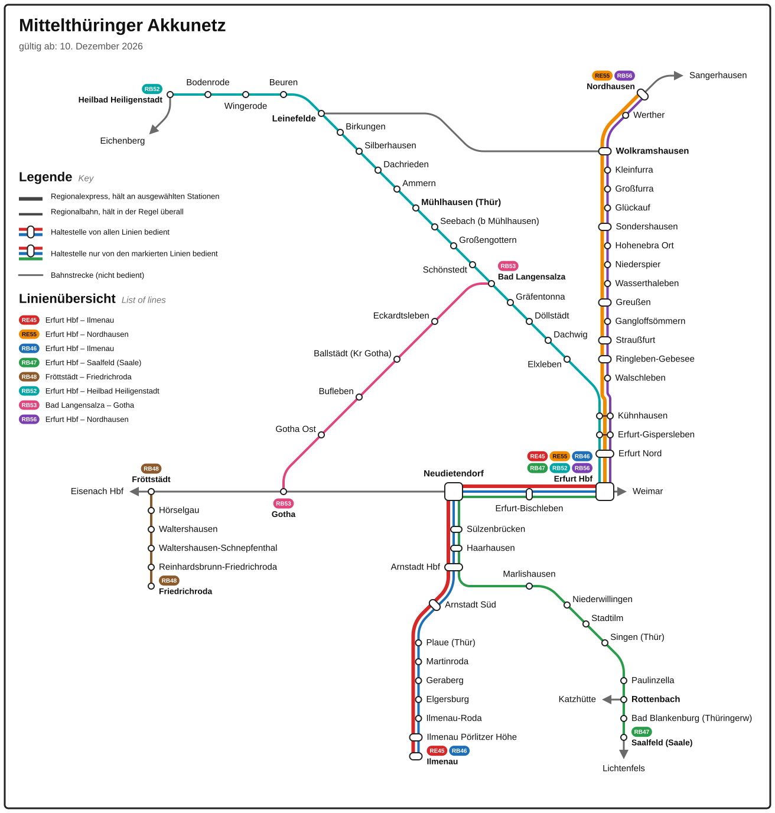
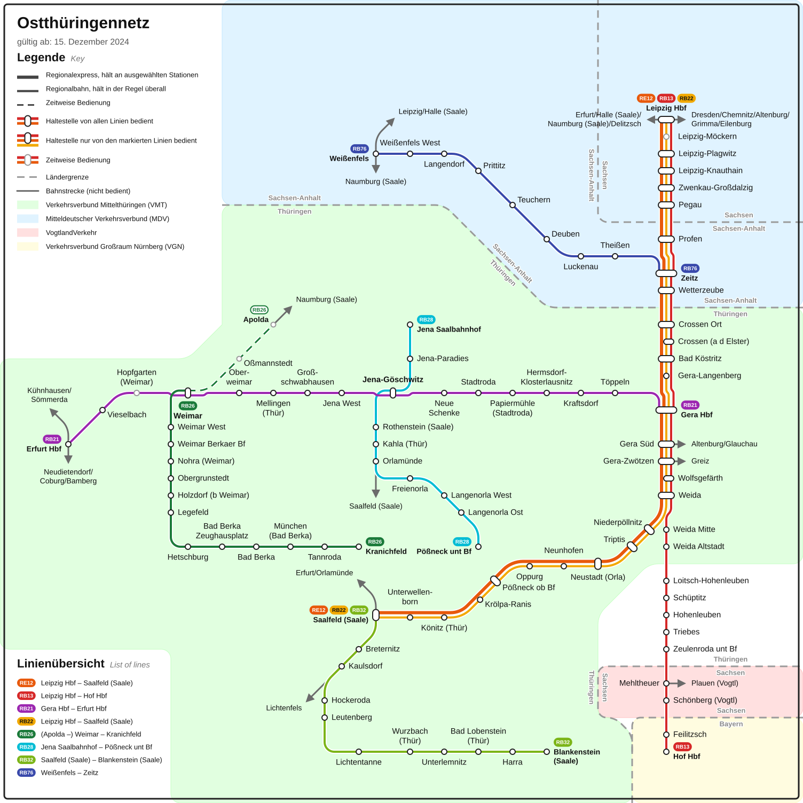
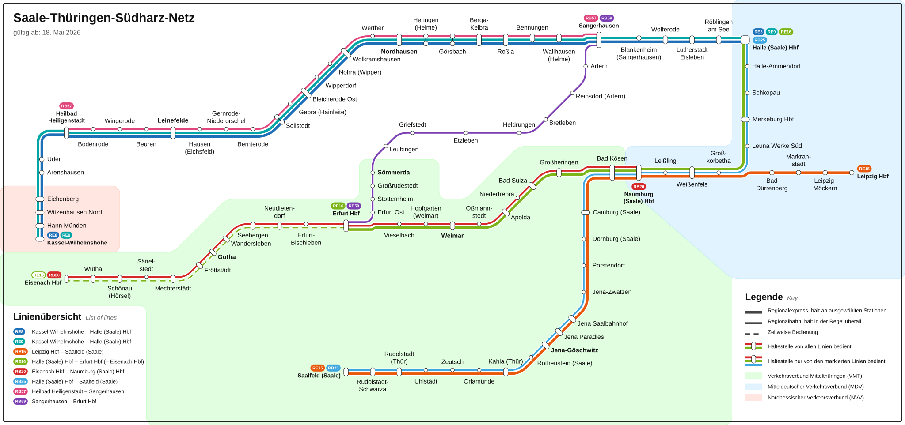

Warum es den Editor gibt
Microsoft Publisher war für viele Hobbyplaner das Werkzeug der Wahl: einfach genug für schnelle Netzpläne, ohne den Aufwand von InDesign oder Affinity. Ende Oktober 2026 wurde es eingestellt.
Ein passender Ersatz fehlte. Deshalb gibt es jetzt einen Editor, der genau diese Aufgabe löst und von jemandem gebaut wurde, der selbst Verkehrsnetze plant.
So entsteht ein Netzplan
- 1Netz beschreibenHaltestellen anlegen, Linien mit Farbe und Kategorie festlegen, Halte zuordnen.
- 2Haltestellen platzierenAuf dem Raster setzen. Der Editor verbindet sie mit 0°-, 45°- und 90°-Strecken und rundet die Knicke.
- 3ExportierenAls SVG, PNG oder PDF ausgeben. Das Projekt selbst liegt als JSON-Datei bei dir.
Pläne, die mit dem Editor entstanden sind
Ein Klick öffnet den Plan in voller Größe als SVG.



Was der Editor kann
- Linien mit Stamm, Ästen und Ringschluss
- Parallele Linien werden gebündelt, die Spurreihenfolge ist einstellbar
- Aufgesplittete Haltestellen und Wegpunkte
- Richtungshalte, zeitweise Bedienung und Durchfahrten
- Legende und Linienübersicht entstehen automatisch
- Flüsse, Grenzen und Flächen als Zeichenobjekte, auch beschriftet
- Textvorlagen und Entwürfe zum Speichern und Wiederverwenden
- Automatische Beschriftungspositionen mit Überlappungsprüfung
- CSV-Import und Hintergrundbild als Pausvorlage
- Rückgängig und Wiederholen, Auswahlmodus, Netzteile exportieren und importieren
Kostenlos und lokal
Der Editor läuft vollständig in deinem Browser. Es gibt keine Registrierung und keinen Server, der deine Pläne sieht. Gespeichert wird als Datei auf deinem Rechner.
Der Quellcode steht unter MIT-Lizenz auf GitHub. Fehler und Wünsche kannst du dort als Issue melden. Quellcode auf GitHub
Endstation: loslegen
Das Beispielnetz im Editor zeigt in einer Minute, wie alles zusammenspielt.